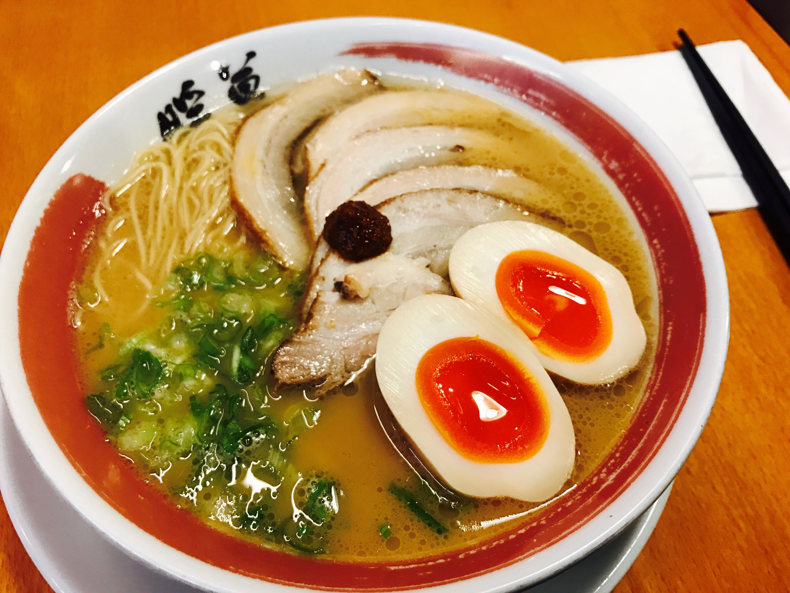
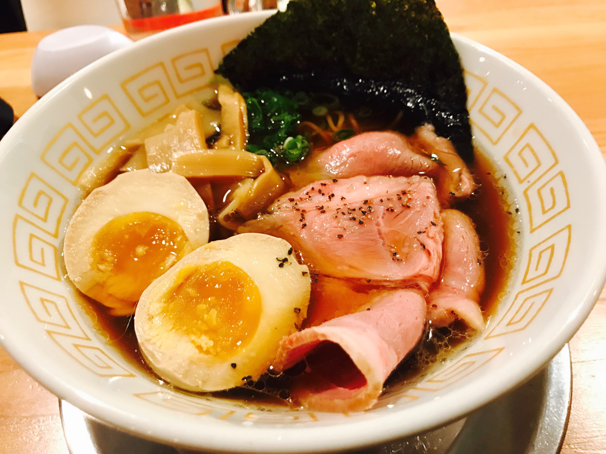
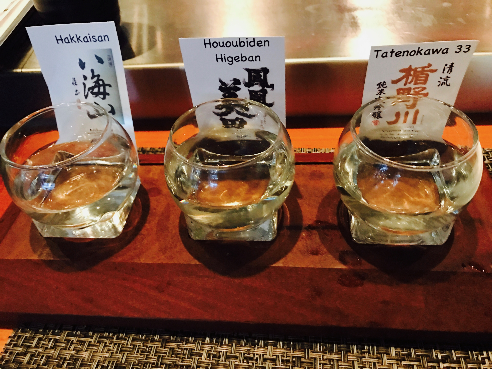
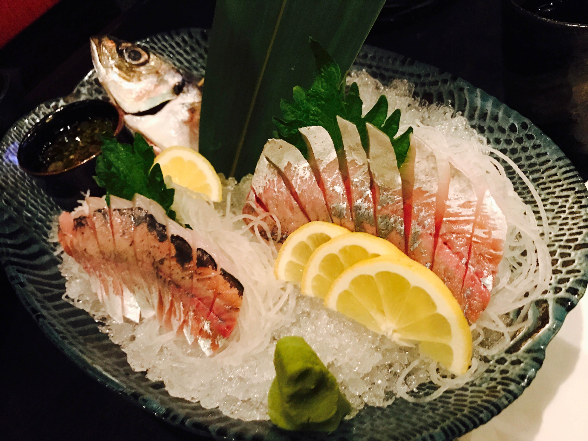
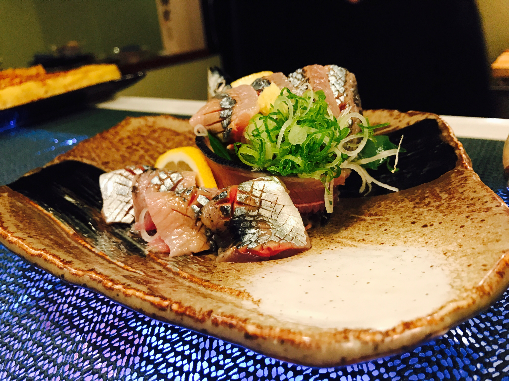
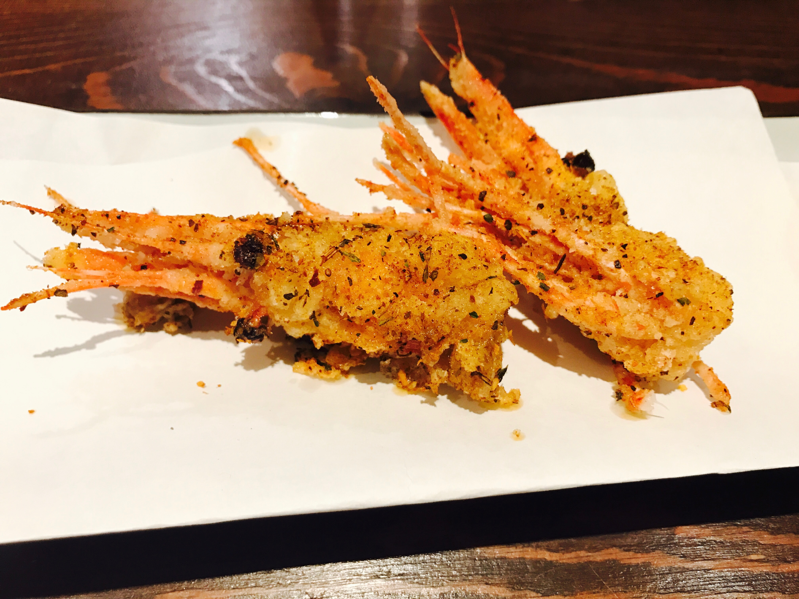
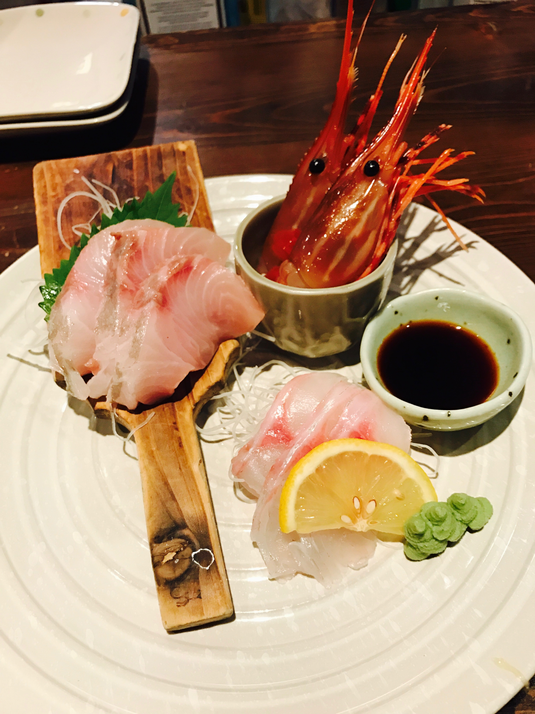
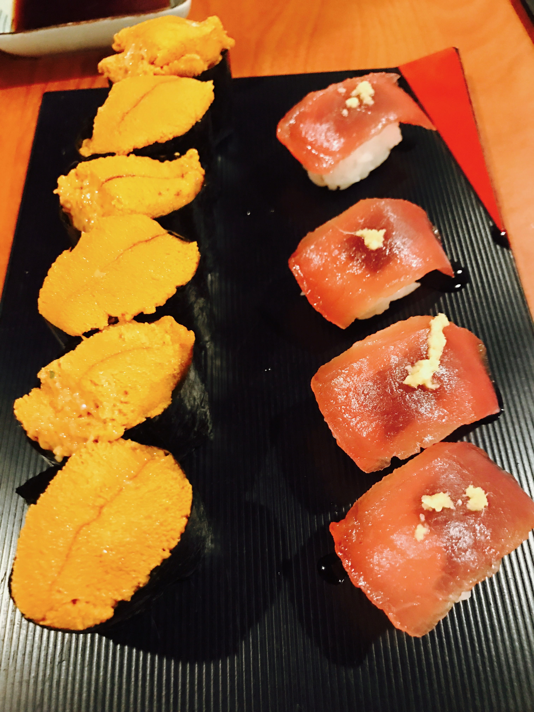
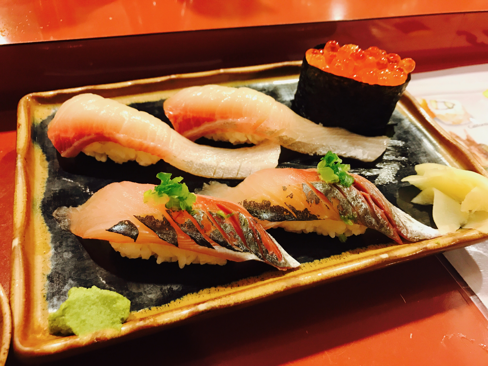

Welcome to my blog!
Hi! This is my blog about my experiences with authentic Japanese food and drinks, in which I will will introduce food commonly found in Japan as well as its characteristics, where you can find them, price, pictures and also resources to other sites about these food! Browse the food section to get started, or see my sample galary below for the food that I have had in my journey to food paradise! Enjoy :)
Gallery
Left click for bigger preview in slideshow. Navigate via arrow key on screen or left/right key on keyboard. Right click->Save image as.. option to download full-size image.









×